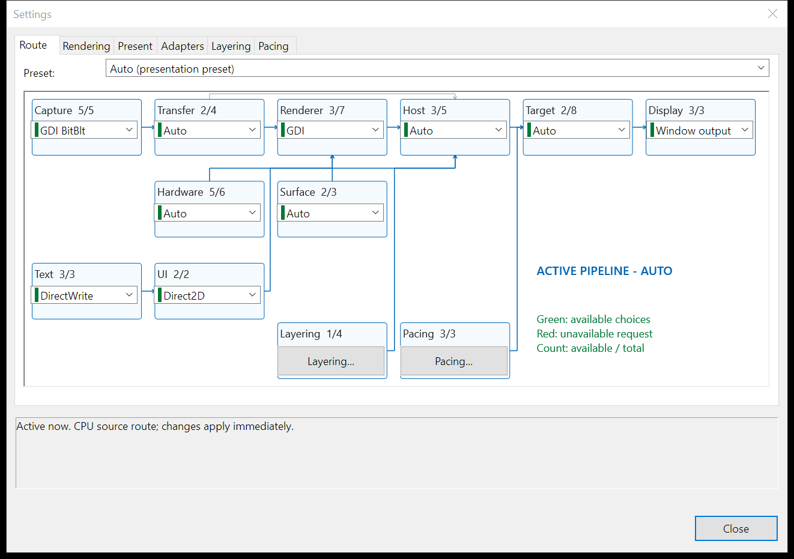
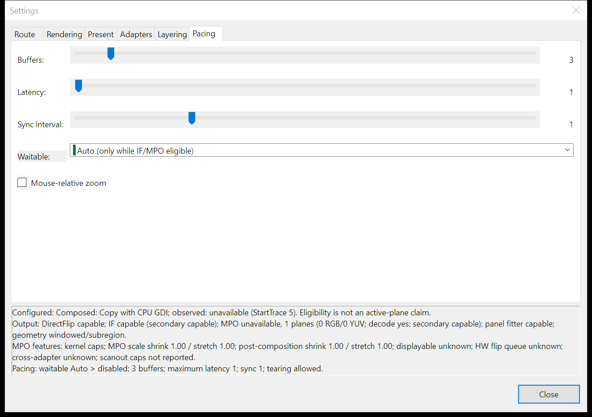
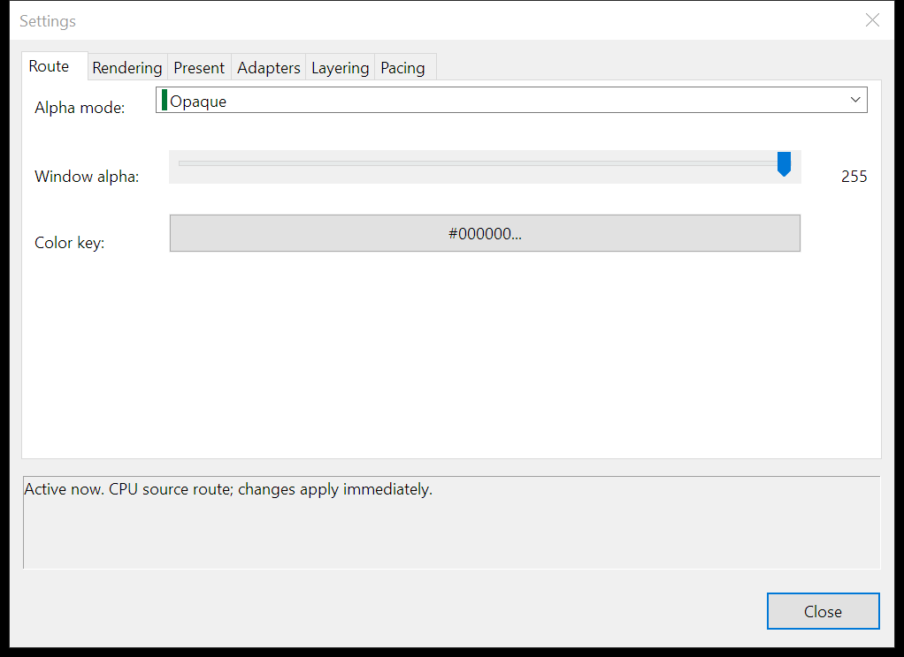
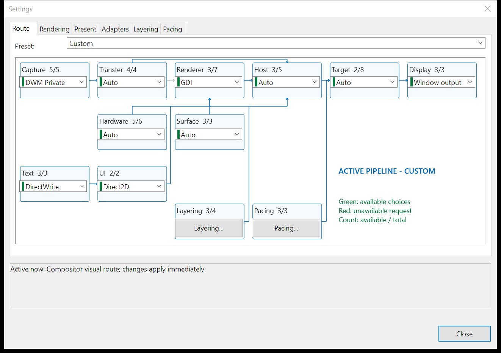
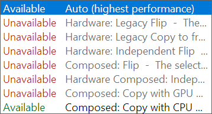

Open Settings... from the context menu. MAG validates the entire renderer, capture, presentation, composition, adapter, and copy-policy route as one configuration. Every compatible change is activated and saved immediately. An unavailable choice is still visible for inspection, but it cannot replace the last working route; the status area explains the exact failed prerequisite.

Route: this is the live pipeline, not a decorative picture. Each combo box is the setting for its node; clicking the node title or border opens that setting too. Layering and Pacing open their detail tabs.
| Node | What changing it controls |
|---|---|
| Capture | GDI BitBlt, DXGI Desktop Duplication, Windows Graphics Capture, DWM Thumbnail, or DWM Private Visual. |
| Transfer | Fastest valid, strict zero-copy, GPU-local copy, or CPU diagnostic copy policy. |
| Renderer | GDI, GDI+, OpenGL, Direct3D 9, Direct3D 11, Direct3D 12, or Vulkan. |
| Host / Surface | Redirected HWND, traditional layered HWND, DirectComposition, or Presentation Manager with redirected/no-redirection ownership. |
| Target | The requested Windows presentation model. |
| Display / Hardware | The presentation output and render-device adapter identities. |
| Text / UI | DirectWrite, glyph-atlas, or GDI text and Direct2D or native overlay drawing. |
| Layering / Pacing | Open the detail tabs for alpha/color-key controls or buffer/latency/sync sliders and the waitable-chain policy. |
The count in each node is available choices / total choices for the current active route. Blue arrows are active dependencies. For compositor-owned DWM capture, the graph shows the visual pass-through branch around the pixel renderer.
| Control | Choices and purpose |
|---|---|
| Graphics API | OpenGL, GDI, GDI+, Direct3D 9, Direct3D 11, Direct3D 12, or Vulkan. This selects the backend that composes and presents pixel-backed frames. GDI+ uses the flat Gdiplus.dll ABI from C; MAG does not use the C++ wrapper API. |
| Capture API | GDI BitBlt, DXGI Desktop Duplication, Windows Graphics Capture, DWM Thumbnail, or DWM Private Visual. See Capture and Rendering. |
| UI API | Native draw list lets the selected graphics backend draw MAG's overlay. Direct2D uses the Direct2D overlay renderer. |
| Text renderer | DirectWrite, Glyph atlas (OpenGL GPU / CPU), or GDI. The glyph-atlas path is GPU-backed with OpenGL and uses its CPU implementation on other routes. |
| Mouse-relative wheel zoom | On the Pacing tab, zooms around the pointer instead of the view center in Window mode. It is disabled by default and does not replace cursor tracking in Follow Mouse or Lens mode. |
The enlarged Settings dialog and its standard controls use the Windows Common Controls version 6 visual style embedded in MAG's application manifest. Combo lists use native Windows popup placement; MAG does not move an open list to a monitor edge.
| Control | Purpose |
|---|---|
| Target | Requests a Windows presentation model. Auto selects the fastest valid target for the active backend and host. |
| Surface | Selects a DWM redirection surface, a no-redirection surface, or host-owned automatic selection. |
| Host | Selects redirected HWND, traditional layered window, DirectComposition, Presentation Manager, or automatic selection. |
| Copy policy | Controls whether compositor-visual, GPU-copy, or CPU round-trip routes are permitted. |
| Alpha mode | Selects opaque, constant alpha, color key, or per-pixel premultiplied alpha where the chosen host supports it. |
| Display adapter | Selects the output that owns presentation: the window's output, the captured output, or an explicit monitor/output. |
| Hardware adapter | Selects the render adapter automatically, matches display/capture, names a physical adapter explicitly, or selects WARP where supported. |
| Require exact target | Continues checking the presentation mode observed by Windows. A mismatch marks the route unsupported instead of silently accepting another model. |
| Allow tearing | Allows tearing only when the active API, driver, window state, and sync interval support it. A nonzero sync interval prevents tearing. |
See Presentation and Composition for every choice and its compatibility rules.

Buffers, latency, and sync interval are sliders with aligned live values. Waitable selects Auto, Enabled, or Disabled. Dragging previews a value; releasing commits a compatible route.
| Value | Allowed | Default | Meaning |
|---|---|---|---|
| Buffers | 2–16 | 3 | Requested number of presentable images. Individual APIs may impose a smaller valid range. |
| Latency | 1–16 | 1 | Maximum queued-frame latency for waitable presenters that expose the control. |
| Sync | 0–4 | 1 | Presentation synchronization interval. Zero requests immediate/tearing-capable behavior where available. |
| Waitable | Auto / Enabled / Disabled | Auto | Controls the DXGI frame-latency wait object. Auto enables it only for an eligible D3D11/D3D12 flip route; Presentation Manager uses its own availability event. D3D12 latency is driver-managed when Disabled. |

Layering uses a dropdown, slider, and Windows color picker; there are no oversized numeric text-entry fields.
| Control | Allowed | Use |
|---|---|---|
| Constant alpha | 0–255 | Overall window opacity for constant-alpha capable hosts. 255 is fully opaque. |
| Color key | Windows color picker | Makes the selected color transparent on a supported color-key route. The button displays the current RRGGBB value. |
| Per-pixel alpha | Premultiplied BGRA | Uses each pixel's alpha channel. Straight-alpha pixels must not be supplied to this mode. |
The status box is authoritative. It identifies the active copy class or explains an unavailable API, host/surface conflict, adapter failure, copy-policy failure, or exact-target mismatch. Compatible changes are saved as they activate. Close only closes the dialog; it does not defer or roll back already active choices.
Presentation status has four deliberately separate layers: requested Target, configured presenter, current output/geometry eligibility, and the mode Windows actually observed. The Output planes node summarizes DirectFlip, Independent Flip, MPO plane counts, WDDM 3 displayable support, and cross-adapter tier. The expanded status also names MPO transforms, filters, scaling limits, secondary-display/HUD support, hardware flip queue state, and the observation source. No observer means no exact runtime result has arrived; it does not mean the configured route is inactive and it never promotes eligibility into a claim.
|
 Accepted compositor route: selecting DWM Private Visual on the Capture node changes the live graph to Custom and reports the compositor-visual route immediately. |
 Availability before selection: each row is labeled Available or Unavailable. An unavailable row includes the resolver's reason; selecting it leaves the active graph unchanged and repeats the full reason in status. |